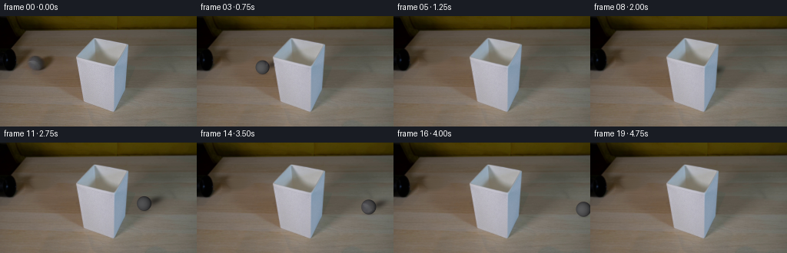
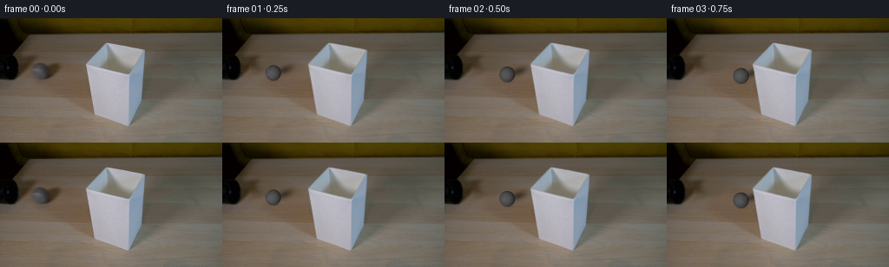
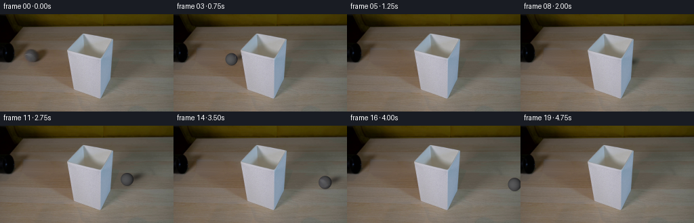

CODING AGENTS AS PIXEL WORLD MODELS
traex/GPT-6.1-Sol · 0146
点击播放 · 原生 RGB 像素
逐轮保存的候选
回放视频、检查图与代码变化。
每份候选均可单独播放。实际图片检查记录在下方工具轨迹中。
候选 01播放与检查图
点击播放 · 原生 RGB 像素


展开代码变化
--- 上一保存版本
+++ 本次保存版本
@@ -0,0 +1,120 @@
+from pathlib import Path
+import numpy as np
+from PIL import Image
+import cv2
+from scipy.ndimage import gaussian_filter, map_coordinates
+import artifact_io
+
+ROOT = Path(__file__).resolve().parent
+SOURCE = np.array(Image.open(ROOT / 'first_frame.png').convert('RGB'))
+H,W = SOURCE.shape[:2]
+
+# Restore only the little patch of tabletop originally concealed by the ball.
+remove = np.zeros((H,W), np.uint8)
+cv2.fillPoly(remove,[np.array([(34,49),(54,49),(72,51),(75,56),
+ (72,65),(61,74),(39,75),(32,68),(33,55)],np.int32)],255)
+clean = cv2.inpaint(SOURCE,remove,5,cv2.INPAINT_TELEA).astype(np.float64)
+# The grain is taken from the same stationary wooden surface.
+fine = SOURCE.astype(float)-gaussian_filter(SOURCE.astype(float),(0.8,0.8,0))
+ys,xs=np.indices((H,W))
+noise = fine[np.minimum(ys+25,H-1),np.minimum(xs+12,W-1)]
+clean += noise*.75*(remove[:,:,None]/255.)
+clean=np.clip(clean,0,255)
+
+# This object is closer to the camera than the horizontal rolling path.
+# Fill the opening too: its near wall hides a ball passing behind the shade.
+shade=np.zeros((H,W),float)
+for y in range(27,125):
+ row=SOURCE[y].astype(float)
+ ids=np.flatnonzero((row[:,2]>100)&(row[:,2]-row[:,0]>-4)&(xs[y]>92)&(xs[y]<176))
+ if len(ids):
+ shade[y,ids[0]:ids[-1]+1]=1
+shade=gaussian_filter(shade,.45)
+shade[shade>.985]=1
+
+# Material detail and the initial seam, in sphere coordinates. The source
+# lighting is subtracted so that it does not rotate with the surface.
+cx0,cy0,r0=44.75,61.15,8.85
+sy,sx=np.indices((H,W),dtype=float)
+nx0=(sx-cx0)/r0
+ny0=-(sy-cy0)/r0
+nz0=np.sqrt(np.maximum(0,1-nx0**2-ny0**2))
+base0=33.0-18.0*nx0-2.5*ny0+52.0*nz0
+residual=SOURCE.astype(float)-base0[:,:,None]
+# We only recover texels well inside the sphere, not mixed edge pixels.
+valid=nx0**2+ny0**2 < .80**2
+residual=np.clip(residual,-10,19)
+residual*=valid[:,:,None]
+residual=gaussian_filter(residual,(.30,.30,0))
+
+S=4
+Y,X=np.mgrid[0:H*S,0:W*S].astype(float)
+X=(X+.5)/S-.5
+Y=(Y+.5)/S-.5
+back=cv2.resize(clean,(W*S,H*S),interpolation=cv2.INTER_CUBIC)
+foreground=cv2.resize(shade,(W*S,H*S),interpolation=cv2.INTER_LINEAR)
+axis=np.array([0.,.82,.57236352]);axis/=np.linalg.norm(axis)
+
+def render(t):
+ # A freely rolling sphere, with gentle rolling resistance. Its image
+ # trajectory is a line; the slight downward slope is table perspective.
+ d=54.5*t-1.0*t*t
+ cx=cx0+d
+ cy=cy0+.125*d
+ r=r0*(1+.00050*d)
+ image=back.copy()
+ # Soft shadow opposite the broad light, plus a small contact shadow.
+ a=-.38
+ dx=X-(cx+12.8*(r/r0));dy=Y-(cy-3.2*(r/r0))
+ u=np.cos(a)*dx+np.sin(a)*dy
+ v=-np.sin(a)*dx+np.cos(a)*dy
+ q=(u/(12.2*r/r0))**2+(v/(5.5*r/r0))**2
+ cast=.46*np.exp(-1.65*q)
+ contact=.22*np.exp(-1.7*(((X-cx-1)/(6.5*r/r0))**2+((Y-cy-r+.4)/(1.8*r/r0))**2))
+ shadow=np.clip(cast+contact,0,.6)*(1-foreground)
+ image*=1-shadow[:,:,None]
+
+ xx=(X-cx)/r; yy=-(Y-cy)/r
+ rr=xx*xx+yy*yy
+ alpha=np.clip((1-np.sqrt(rr))*r*S+.5,0,1)
+ z=np.sqrt(np.maximum(0,1-rr))
+ # Inverse rotation about the transverse horizontal axis of the table.
+ theta=-d/(r0*1.05)
+ ct,st=np.cos(theta),np.sin(theta)
+ normal=np.stack((xx,yy,z),axis=-1)
+ dot=normal@axis
+ mat=normal*ct-np.cross(axis,normal)*st+dot[:,:,None]*axis*(1-ct)
+ mx,my,mz=mat[:,:,0],mat[:,:,1],mat[:,:,2]
+ tx=cx0+r0*mx;ty=cy0-r0*my
+ texture=np.stack([map_coordinates(residual[:,:,i],[ty,tx],order=1,mode='constant',cval=0) for i in range(3)],axis=-1)
+ known=np.clip((mz-.50)*8,0,1)
+ # Slight felt nap, fixed in the ball's local coordinates, not the screen.
+ felt=(np.sin(69*mx+21*my-29*mz)*np.sin(46*my+37*mz)+.5*np.sin(113*mz+67*mx))*1.0
+ seamdist=my-.29*(mz*mz-mx*mx)-.01
+ seam=11*np.exp(-(seamdist/.055)**2)
+ material=(felt+seam-1.0)[:,:,None]*(1-known[:,:,None])+texture*known[:,:,None]
+ light=33.-18.*xx-2.5*yy+52.*z
+ # The fixed shade creates a slightly dimmer stretch of tabletop.
+ lighting=1-.10*np.exp(-((cx-173)/22)**2)
+ ball=(light[:,:,None]+material)*lighting
+ ball[:,:,2]+=1.0
+ # Very subtle warm reflected light along the lower edge.
+ warm=np.maximum(0,-yy)*np.maximum(0,1-z)*2
+ ball[:,:,0]+=warm
+ ball=np.clip(ball,20,130)
+ alpha*=1-foreground
+ image=image*(1-alpha[:,:,None])+ball*alpha[:,:,None]
+ # Preserve all pixels of the static setup outside the modified patch.
+ out=cv2.resize(image,(W,H),interpolation=cv2.INTER_AREA)
+ active=(np.abs(out-clean).max(2)>.08)
+ out[~active]=clean[~active]
+ return np.clip(np.rint(out),0,255).astype(np.uint8)
+
+frames=np.stack([SOURCE]+[render(i/4) for i in range(1,20)])
+artifact_io.save(frames,ROOT)
+# RGB output is also encoded as a conventional preview video.
+try:
+ import subprocess
+ subprocess.run(['ffmpeg','-y','-loglevel','error','-framerate','4','-i',str(ROOT/'frames/%02d.png'),'-c:v','libx264','-crf','16','-pix_fmt','yuv420p',str(ROOT/'video.mp4')],check=True)
+except (FileNotFoundError,subprocess.CalledProcessError):
+ pass
候选 02播放与检查图
点击播放 · 原生 RGB 像素
展开代码变化
--- 上一保存版本
+++ 本次保存版本
@@ -18,7 +18,16 @@
fine = SOURCE.astype(float)-gaussian_filter(SOURCE.astype(float),(0.8,0.8,0))
ys,xs=np.indices((H,W))
noise = fine[np.minimum(ys+25,H-1),np.minimum(xs+12,W-1)]
-clean += noise*.75*(remove[:,:,None]/255.)
+rowwood=gaussian_filter(SOURCE[:,78:89].astype(float).mean(1),(1.0,0))
+wood=np.broadcast_to(rowwood[:,None,:],(H,W,3)).copy()
+wood+=(80-xs)[:,:,None]/40*np.array([-6.,-2.,4.])
+# Preserve the existing shadow of the black tube, but not the ball's shadow.
+tube_center=22+np.maximum(0,60-ys)*.5
+tube_dark=.55*np.clip((66-ys)/16,0,1)*np.exp(-((xs-tube_center)/10)**2)
+wood*=1-tube_dark[:,:,None]
+wood+=noise*.65
+blend=np.clip(cv2.distanceTransform(remove,cv2.DIST_L2,5)/2.5,0,1)
+clean=clean*(1-blend[:,:,None])+wood*blend[:,:,None]
clean=np.clip(clean,0,255)
# This object is closer to the camera than the horizontal rolling path.
@@ -105,7 +114,7 @@
alpha*=1-foreground
image=image*(1-alpha[:,:,None])+ball*alpha[:,:,None]
# Preserve all pixels of the static setup outside the modified patch.
- out=cv2.resize(image,(W,H),interpolation=cv2.INTER_AREA)
+ out=clean+cv2.resize(image-back,(W,H),interpolation=cv2.INTER_AREA)
active=(np.abs(out-clean).max(2)>.08)
out[~active]=clean[~active]
return np.clip(np.rint(out),0,255).astype(np.uint8)
候选 03播放与检查图
点击播放 · 原生 RGB 像素

展开代码变化
代码未变化；重新保存了产物。
候选 04播放与检查图
点击播放 · 原生 RGB 像素

展开代码变化
--- 上一保存版本
+++ 本次保存版本
@@ -48,7 +48,7 @@
nx0=(sx-cx0)/r0
ny0=-(sy-cy0)/r0
nz0=np.sqrt(np.maximum(0,1-nx0**2-ny0**2))
-base0=33.0-18.0*nx0-2.5*ny0+52.0*nz0
+base0=51.0-18.0*nx0-6.0*ny0+31.0*nz0
residual=SOURCE.astype(float)-base0[:,:,None]
# We only recover texels well inside the sphere, not mixed edge pixels.
valid=nx0**2+ny0**2 < .80**2
@@ -102,7 +102,7 @@
seamdist=my-.29*(mz*mz-mx*mx)-.01
seam=11*np.exp(-(seamdist/.055)**2)
material=(felt+seam-1.0)[:,:,None]*(1-known[:,:,None])+texture*known[:,:,None]
- light=33.-18.*xx-2.5*yy+52.*z
+ light=51.-18.*xx-6.*yy+31.*z
# The fixed shade creates a slightly dimmer stretch of tabletop.
lighting=1-.10*np.exp(-((cx-173)/22)**2)
ball=(light[:,:,None]+material)*lighting
候选 05播放与检查图
可观测工具轨迹
实际执行的命令与返回图片。
命令 1exit 0
/bin/bash -lc "ls -la && cat GENERATION_RULES.md && printf '\\n---PROMPT---\\n' && cat prompt.txt"
命令 2exit 0
/bin/bash -lc "cat artifact_io.py && python - <<'PY'
from PIL import Image
import numpy as np
im=np.array(Image.open('first_frame.png'));print(im.shape)
for y in range(0,144,4):
s=''
for x in range(0,256,4):
r,g,b=im[y:y+4,x:x+4].mean((0,1));v=(r+g+b)/3
if v<35:c='@'
elif v<60:c='#'
elif v<90:c='O'
elif v<120:c='o'
elif v<155:c=':'
elif v<190:c='.'
elif r>g*1.12 and g>b*1.12:c='w'
elif v<225:c='-'
else:c=' '
s+=c
print(f'{y:3d} {s}')
PY"命令 3exit 0
/bin/bash -lc "python - <<'PY'
from PIL import Image
import numpy as np
im=np.array(Image.open('first_frame.png'))
print('min/max',im.min((0,1)),im.max((0,1)))
for y in range(0,144,8):
print(y, [tuple(p) for p in im[y,::16]])
print('\\nLEFT detail luminance 2px')
chars='@%#*+=-:. '
for y in range(16,92,2):
print(f'{y:3d} '+''.join(chars[min(9,int(im[y:y+2,x:x+2].mean()/25.6))] for x in range(0,106,2)))
PY"命令 4exit 0
/bin/bash -lc "python - <<'PY'
from PIL import Image
import numpy as np
im=np.array(Image.open('first_frame.png')).astype(float)
print('Color-class left (K black, G neutral gray, W wood, S shadow, C cool)')
print(' '+''.join(str(x//10%10) for x in range(75)))
print(' '+''.join(str(x%10) for x in range(75)))
for y in range(34,78):
s=''
for x in range(75):
r,g,b=im[y,x];v=(r+g+b)/3
if v<12:c='K'
elif v<26:c='k'
elif v<45:c='s'
elif abs(r-b)<7 and abs(r-g)<7:c='G'
elif b>=r-3:c='C'
elif r-b<15:c='g'
elif v<70:c='S'
else:c='W'
s+=c
print(f'{y:3} {s}')
print('\\nRGB ROI rows')
for y in range(46,74,2):
print(y,[(x,tuple(im[y,x].astype(int))) for x in range(30,65,3)])
PY"命令 5exit 1
/bin/bash -lc "python - <<'PY'
import numpy as np
from PIL import Image
im=np.array(Image.open('first_frame.png'))
for y in range(51,73):
print(y,' '.join(f'{int(v):3}' for v in im[y,34:57].mean(1)))
print('available')
import scipy,cv2,skimage
print(scipy.__version__,cv2.__version__,skimage.__version__)
PY"命令 6exit 0
/bin/bash -lc "python - <<'PY'
import cv2,numpy as np
from PIL import Image
im=np.array(Image.open('first_frame.png'))
# list lit-gray region on row61 for shade extent
for y in [28,32,36,40,44,48,52,56,60,64,68,72]:
runs=[];flag=False
for x in range(80,190):
r,g,b=im[y,x].astype(int);yes=b>r-2 and b>95
if yes and not flag: st=x
if not yes and flag:runs.append((st,x-1))
flag=yes
if flag:runs.append((st,189))
print(y,runs)
PY"命令 7exit 0
/bin/bash -lc "python - <<'PY'
import numpy as np
from PIL import Image
im=np.asarray(Image.open('first_frame.png')).astype(float)
y,x=np.mgrid[0:144,0:256];r=8.7;cx=44.8;cy=61.1
nx=(x-cx)/r;ny=-(y-cy)/r;nz=np.sqrt(np.maximum(0,1-nx*nx-ny*ny));m=nx*nx+ny*ny<.75**2
A=np.stack([np.ones(m.sum()),nx[m],ny[m],nz[m]],1)
c=np.linalg.lstsq(A,im[m].mean(1),rcond=None)[0]
print('coef',c,'residual',np.std(A@c-im[m].mean(1)))
print('resid')
val=im.mean(2)-(c[0]+c[1]*nx+c[2]*ny+c[3]*nz)
for Y in range(53,70):
print(Y,' '.join(f'{int(val[Y,X]):3}' if nx[Y,X]**2+ny[Y,X]**2<.85**2 else ' ' for X in range(37,54)))
PY"命令 8exit 0
/bin/bash -lc "python - <<'PY'
from PIL import Image
import numpy as np
im=np.array(Image.open('first_frame.png')).astype(float)
y,x=np.mgrid[0:144,0:256];cx,cy,rx,ry=44.7,61.3,8.7,9.0
nx=(x-cx)/rx;ny=-(y-cy)/ry;nz=np.sqrt(np.maximum(0,1-nx*nx-ny*ny));m=nx*nx+ny*ny<.86**2
A=np.stack([np.ones(m.sum()),nx[m],ny[m],nz[m],nx[m]**2,ny[m]**2,nx[m]*ny[m]],1)
c=np.linalg.lstsq(A,im[m].mean(1),rcond=None)[0];print(c,np.std(A@c-im[m].mean(1)))
PY"命令 9exit 0
/bin/bash -lc "cat > generate.py <<'PY'
from pathlib import Path
import numpy as np
from PIL import Image
import cv2
from scipy.ndimage import gaussian_filter, map_coordinates
import artifact_io
ROOT = Path(__file__).resolve().parent
SOURCE = np.array(Image.open(ROOT / 'first_frame.png').convert('RGB'))
H,W = SOURCE.shape[:2]
# Restore only the little patch of tabletop originally concealed by the ball.
remove = np.zeros((H,W), np.uint8)
cv2.fillPoly(remove,[np.array([(34,49),(54,49),(72,51),(75,56),
(72,65),(61,74),(39,75),(32,68),(33,55)],np.int32)],255)
clean = cv2.inpaint(SOURCE,remove,5,cv2.INPAINT_TELEA).astype(np.float64)
# The grain is taken from the same stationary wooden surface.
fine = SOURCE.astype(float)-gaussian_filter(SOURCE.astype(float),(0.8,0.8,0))
ys,xs=np.indices((H,W))
noise = fine[np.minimum(ys+25,H-1),np.minimum(xs+12,W-1)]
clean += noise*.75*(remove[:,:,None]/255.)
clean=np.clip(clean,0,255)
# This object is closer to the camera than the horizontal rolling path.
# Fill the opening too: its near wall hides a ball passing behind the shade.
shade=np.zeros((H,W),float)
for y in range(27,125):
row=SOURCE[y].astype(float)
ids=np.flatnonzero((row[:,2]>100)&(row[:,2]-row[:,0]>-4)&(xs[y]>92)&(xs[y]<176))
if len(ids):
shade[y,ids[0]:ids[-1]+1]=1
shade=gaussian_filter(shade,.45)
shade[shade>.985]=1
# Material detail and the initial seam, in sphere coordinates. The source
# lighting is subtracted so that it does not rotate with the surface.
cx0,cy0,r0=44.75,61.15,8.85
sy,sx=np.indices((H,W),dtype=float)
nx0=(sx-cx0)/r0
ny0=-(sy-cy0)/r0
nz0=np.sqrt(np.maximum(0,1-nx0**2-ny0**2))
base0=33.0-18.0*nx0-2.5*ny0+52.0*nz0
residual=SOURCE.astype(float)-base0[:,:,None]
# We only recover texels well inside the sphere, not mixed edge pixels.
valid=nx0**2+ny0**2 < .80**2
residual=np.clip(residual,-10,19)
residual*=valid[:,:,None]
residual=gaussian_filter(residual,(.30,.30,0))
S=4
Y,X=np.mgrid[0:H*S,0:W*S].astype(float)
X=(X+.5)/S-.5
Y=(Y+.5)/S-.5
back=cv2.resize(clean,(W*S,H*S),interpolation=cv2.INTER_CUBIC)
foreground=cv2.resize(shade,(W*S,H*S),interpolation=cv2.INTER_LINEAR)
axis=np.array([0.,.82,.57236352]);axis/=np.linalg.norm(axis)
def render(t):
# A freely rolling sphere, with gentle rolling resistance. Its image
# trajectory is a line; the slight downward slope is table perspective.
d=54.5*t-1.0*t*t
cx=cx0+d
cy=cy0+.125*d
r=r0*(1+.00050*d)
image=back.copy()
# Soft shadow opposite the broad light, plus a small contact shadow.
a=-.38
dx=X-(cx+12.8*(r/r0));dy=Y-(cy-3.2*(r/r0))
u=np.cos(a)*dx+np.sin(a)*dy
v=-np.sin(a)*dx+np.cos(a)*dy
q=(u/(12.2*r/r0))**2+(v/(5.5*r/r0))**2
cast=.46*np.exp(-1.65*q)
contact=.22*np.exp(-1.7*(((X-cx-1)/(6.5*r/r0))**2+((Y-cy-r+.4)/(1.8*r/r0))**2))
shadow=np.clip(cast+contact,0,.6)*(1-foreground)
image*=1-shadow[:,:,None]
xx=(X-cx)/r; yy=-(Y-cy)/r
rr=xx*xx+yy*yy
alpha=np.clip((1-np.sqrt(rr))*r*S+.5,0,1)
z=np.sqrt(np.maximum(0,1-rr))
# Inverse rotation about the transverse horizontal axis of the table.
theta=-d/(r0*1.05)
ct,st=np.cos(theta),np.sin(theta)
normal=np.stack((xx,yy,z),axis=-1)
dot=normal@axis
mat=normal*ct-np.cross(axis,normal)*st+dot[:,:,None]*axis*(1-ct)
mx,my,mz=mat[:,:,0],mat[:,:,1],mat[:,:,2]
tx=cx0+r0*mx;ty=cy0-r0*my
texture=np.stack([map_coordinates(residual[:,:,i],[ty,tx],order=1,mode='constant',cval=0) for i in range(3)],axis=-1)
known=np.clip((mz-.50)*8,0,1)
# Slight felt nap, fixed in the ball's local coordinates, not the screen.
felt=(np.sin(69*mx+21*my-29*mz)*np.sin(46*my+37*mz)+.5*np.sin(113*mz+67*mx))*1.0
seamdist=my-.29*(mz*mz-mx*mx)-.01
seam=11*np.exp(-(seamdist/.055)**2)
material=(felt+seam-1.0)[:,:,None]*(1-known[:,:,None])+texture*known[:,:,None]
light=33.-18.*xx-2.5*yy+52.*z
# The fixed shade creates a slightly dimmer stretch of tabletop.
lighting=1-.10*np.exp(-((cx-173)/22)**2)
ball=(light[:,:,None]+material)*lighting
ball[:,:,2]+=1.0
# Very subtle warm reflected light along the lower edge.
warm=np.maximum(0,-yy)*np.maximum(0,1-z)*2
ball[:,:,0]+=warm
ball=np.clip(ball,20,130)
alpha*=1-foreground
image=image*(1-alpha[:,:,None])+ball*alpha[:,:,None]
# Preserve all pixels of the static setup outside the modified patch.
out=cv2.resize(image,(W,H),interpolation=cv2.INTER_AREA)
active=(np.abs(out-clean).max(2)>.08)
out[~active]=clean[~active]
return np.clip(np.rint(out),0,255).astype(np.uint8)
frames=np.stack([SOURCE]+[render(i/4) for i in range(1,20)])
artifact_io.save(frames,ROOT)
# RGB output is also encoded as a conventional preview video.
try:
import subprocess
subprocess.run(['ffmpeg','-y','-loglevel','error','-framerate','4','-i',str(ROOT/'frames/%02d.png'),'-c:v','libx264','-crf','16','-pix_fmt','yuv420p',str(ROOT/'video.mp4')],check=True)
except (FileNotFoundError,subprocess.CalledProcessError):
pass
PY
python generate.py
python - <<'PY'
from PIL import Image
import numpy as np
A=np.array(Image.open('first_frame.png'));B=np.array(Image.open('frames/01.png'))
print('first identical',np.array_equal(A,np.array(Image.open('frames/00.png'))))
for i in [1,3,4,5,6,8,10,11,13,16,19]:
B=np.array(Image.open(f'frames/{i:02}.png'))
changed=np.abs(B.astype(int)-A.astype(int)).max(2)>3
print(i,'changed',changed.sum(),'outside',(changed[:40,80:]).sum())
print('clean patch luminance frame1')
chars='@%#*+=-:. '
for y in range(46,78):
print(f'{y:3d} '+''.join(chars[min(9,int(B[y,x].mean()/25.6))] for x in range(28,80)))
PY"命令 10exit 0
/bin/bash -lc "python - <<'PY'
import numpy as np
from PIL import Image
im=np.array(Image.open('first_frame.png'))
for y in [48,50,52,54,56,58,60,62,64,66,68,70,72,74]:
print(y,[(x,tuple(im[y,x])) for x in [28,32,34,36,38,40,70,74,78,82,86,90,94]])
PY"命令 11exit 0
/bin/bash -lc "python generate.py && python - <<'PY'
from PIL import Image
import numpy as np
A=np.array(Image.open('first_frame.png'))
chars='@%#*+=-:. '
for i in [1,3,5,7,10,13,16,19]:
B=np.array(Image.open(f'frames/{i:02}.png'))
changed=np.abs(A.astype(int)-B.astype(int)).max(2)>2
print('frame',i,'changed',changed.sum(),'static top differences',changed[:40,80:].sum())
if i in [1,10]:
for y in range(47,96,2):
print(f'{y:3} '+''.join(chars[min(9,int(B[y:y+2,x:x+2].mean()/25.6))] for x in range(24,242,2)))
print(np.load('pixels.npz')['pixels'].shape)
PY"命令 12exit 0
/bin/bash -lc "python - <<'PY'
from PIL import Image
import numpy as np
im=np.array(Image.open('first_frame.png')).astype(float)
y,x=np.indices((144,256));cx=44.75;cy=61.15;r=8.85
nx=(x-cx)/r;ny=-(y-cy)/r;nz=np.sqrt(np.maximum(0,1-nx*nx-ny*ny))
for radius in [.75,.8,.85,.9,.95]:
m=nx*nx+ny*ny<radius**2
A=np.stack([np.ones(m.sum()),nx[m],ny[m],nz[m]],1)
c=np.linalg.lstsq(A,im[m].mean(1),rcond=None)[0]
print(radius,c,'std',np.std(A@c-im[m].mean(1)))
PY"命令 13exit 0
/bin/bash -lc "python generate.py && python - <<'PY'
import numpy as np
from PIL import Image
from pathlib import Path
f=np.stack([np.array(Image.open(p)) for p in sorted(Path('frames').glob('*.png'))])
assert f.shape==(20,144,256,3) and f.dtype==np.uint8
assert np.array_equal(f[0],np.array(Image.open('first_frame.png')))
print('Validated:',f.shape,f.dtype)
print('Artifacts:',*[p.name for p in Path('.').iterdir() if p.name in ['pixels.npz','index.html','video.mp4','generate.py']])
PY"保存候选 5 份；完成命令 13 次；可验证图片返回 0 张。原始 API 响应与完整日志保留在本地。